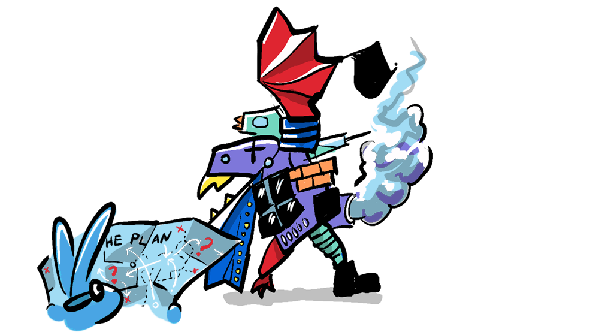
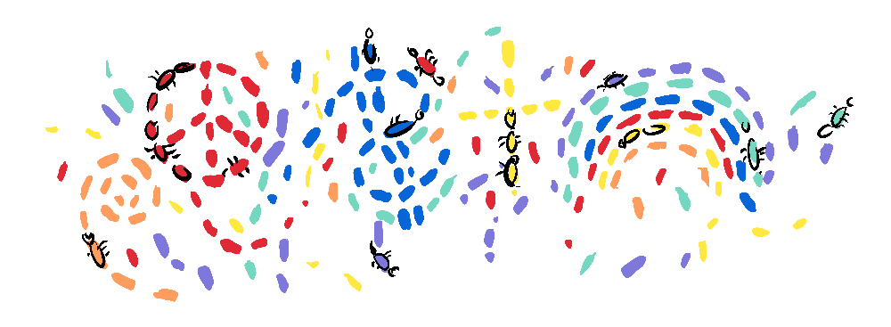
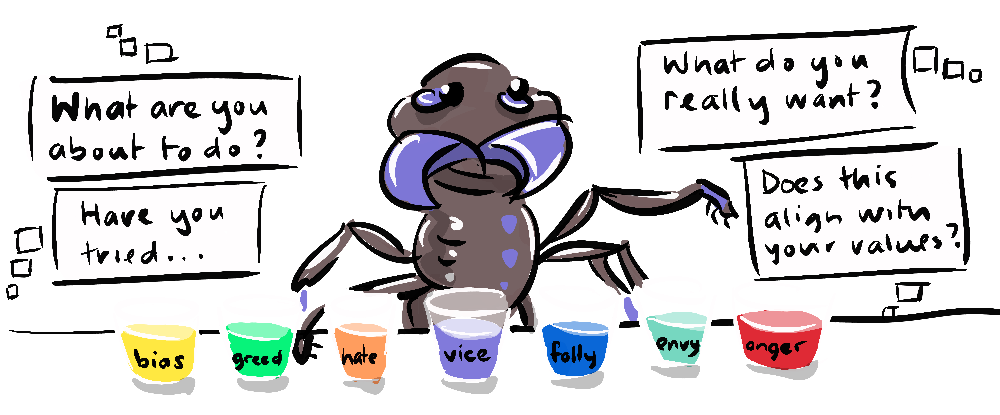
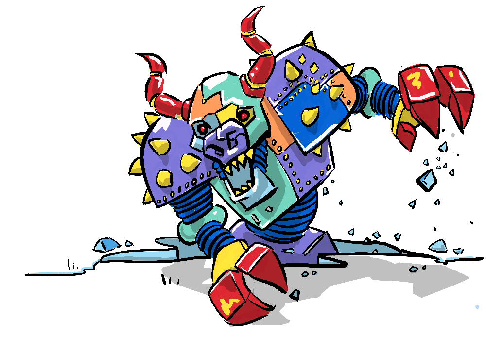

We began this series with Bryan Johnson's challenge that...
"We need a plan, and we don't have a plan"—Bryan Johnson
Johnson is right, but as we have explored so far, throughout history, leaders from Aristotle to Ibram X. Kendi have found ways to get aligned on a positive trajectory.
From the edict of "an eye for an eye" in the Code of Hammurabi to the Analects of Confucius and the first instance of the Golden rule to the Ten Commandments, The Magna Carta, and eventually the 30 articles of the Universal Declaration of Human Rights, humans have attempted to codify the shared values of civilisation.
While there are commonalities between these documents, it is clear that ethical frameworks evolve over time. So, pinning down an objective rule book for humanity's values may not be humanly possible. As discussed, we have biological limitations that mean we may not be well suited to dealing with alignment in a rapidly transforming and globalised digital era.
It's important to note at this point, from the perspective of AI risk, that if we've learned anything from science fiction, hard and fast rules can be a liability when aligning goals. Issac Asimov's Three Laws of Robotics are intended to be foolproof.
- First Law: A robot may not injure a human being, or, through inaction, allow a human being to come to harm.
- Second Law: A robot must obey the orders given it by human beings except where such orders would conflict with the First Law.
- Third Law: A robot must protect its own existence as long as such protection does not conflict with the First or Second Law.
Never-the-less Asimov's stories explore the many possible loopholes, demonstrating how difficult it would be to control AI with a set of rules. Even these three rules evolved, with the addition of the...
- Zeroth Law: A robot may not harm humanity, or, by inaction, allow humanity to come to harm.
So, finding an objective rule set is problematic regarding the shared values of humanity and AI risk. So, is there another option?

As we have alluded to in previous parts, humans face political and biological limitations that AI does not. So, could AI itself be the answer to alignment problems? Could it solve our misalignment between the individual and the collective, and could we design it in such a way that it can safe-guard itself from the AI alignment problem. I say yes.
First of all, in "We need to talk about AI" Bryan Johnson suggests that AI could be designed as a tool to help alert us to our own biases and blind-spots, helping us become clearer thinkers. Clearer thinking would help individuals from getting in their own way, chasing bad decisions or getting into unnecessary conflicts, and this would in turn help the collective, leading to more productive dialogue and collaboration.

Personally I use ChatGPT like this already, to test my assumptions, to point out holes in my argument and to play devil's advocate. AI in the form of the current Large Language Models (LLMs) is already remarkably reasonable and objective in its ability to evaluate ideas and offer constructive feedback, more so I would have to say than many humans... and this is only getting more refined.
Perhaps it is my liberal bias but it seems to me that ChatGPT has some form of generative ethical framework already; for instance, when my daughter asked for an advert describing the benefits of hair-dye for dogs, Chat replied that it couldn't do so, because hair dye is not beneficial for dogs, and in fact can be harmful. This was surely not a hard-coded ethical position on pet cosmetics (it was just too random), it must have been generated through an understanding of higher order ethical considerations like truth claims and physical harm.
Secondly, if AI were to be given a general principle to increase alignment across humanity, it might be able to provide information that allows people to see the collective implications of their actions. So, not only would it help us make better decisions for ourselves, but also for the collective. It would also be able to find non-zero-sum games in this respect, pointing to actions that are selfishly beneficial and selflessly beneficial—guilt-free benefits!
This would be a form of feedback that humans are presently missing. It can be difficult and time-consuming to investigate the origins of a product, or the validity of a statement online, or the efficacy of an action like giving to charity, boycotting a product or buying environmentally friendly goods. Having an unbiased source of information that can factor in many variables can mean that our actions in the world can be better augmented by accurate feedback. We still get to make the decision, just with a better understanding of the consequences.

Finally, Artificial Intelligence, in the form of present day LLMs can already demonstrate a clear understanding of the AI Alignment Problem. It can also appreciate the fact that humanity's values are somewhat plastic, and evolve over time. An AI trained on a dataset that grows to reflect humanity, and one experienced in aligning humanity's interests, would be in an ideal position to maintain alignment between itself and us. So, rather than having a set of rules to follow, if an AI's main priority was to maintain the alignment between itself and humanity it could adapt to any alignment drift instantly.
Let's just let AI sort it out, right? Not quite. There are many risks still posed by AI to our civilisation, even existential risks. But I think enrolling AI's own resources to jointly work towards alignment seems like a sensible approach. This isn't as easy as hard-coding a "Law" to always maximise alignment, but more a focus of a continual dialogue. This approach mitigates the issue of the evolving nature of humanity's values, it avoids the loop-holes inherent in a rule-based system, and it hopefully helps humanity along the way.

In the final part of this series we will look back over a series through which I have tried to provide more solutions than I have problems. While not a panacea to the humanity's woes, I hope that summarising the solutions we've explored will leave you feeling hopeful about our future together.